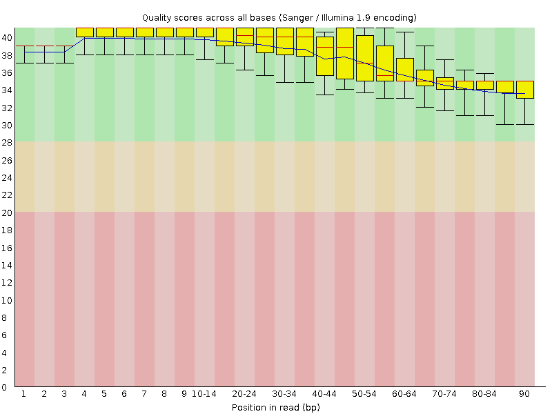
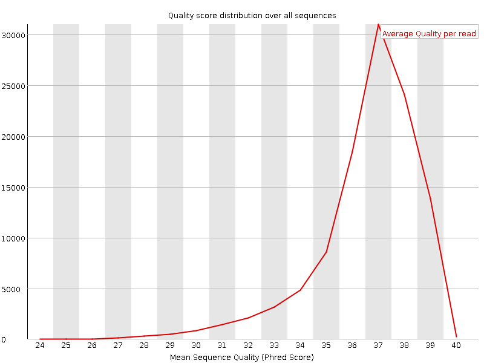
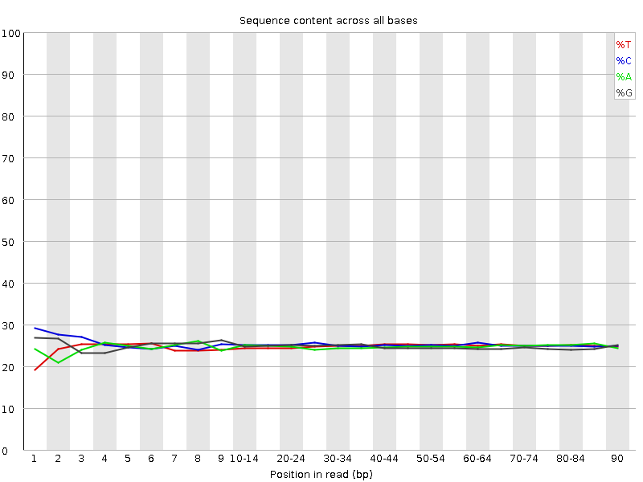
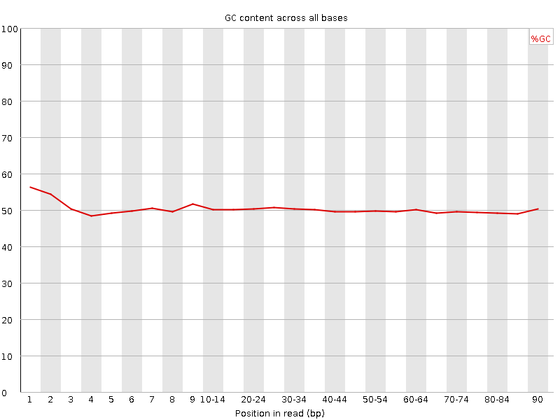
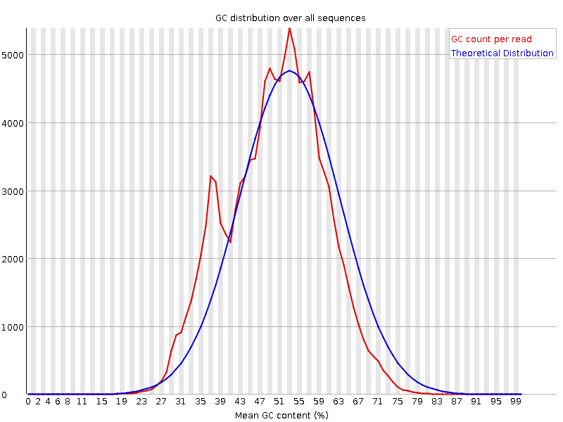
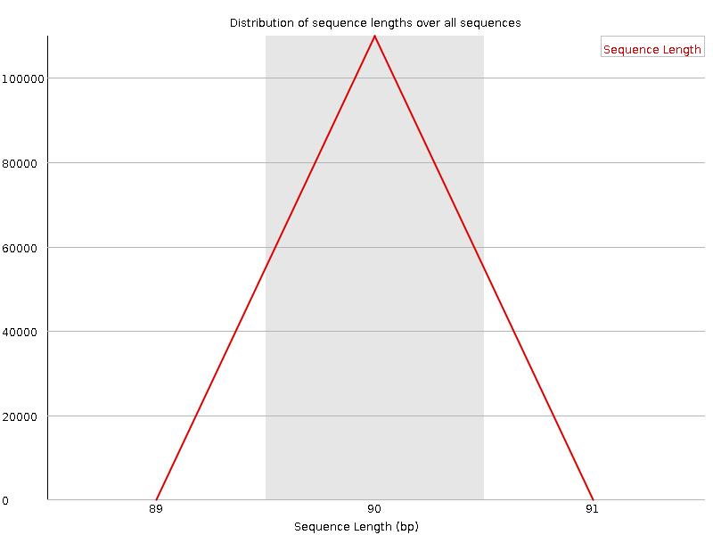
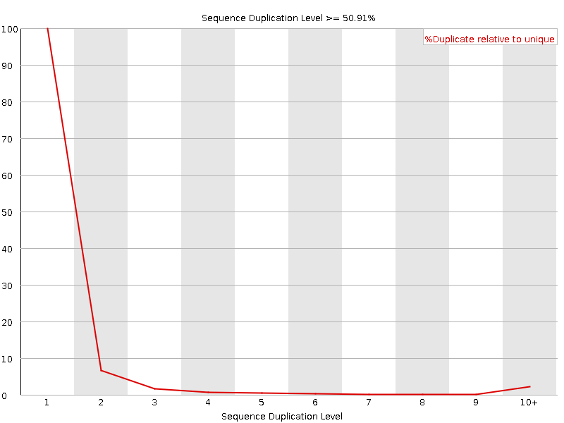
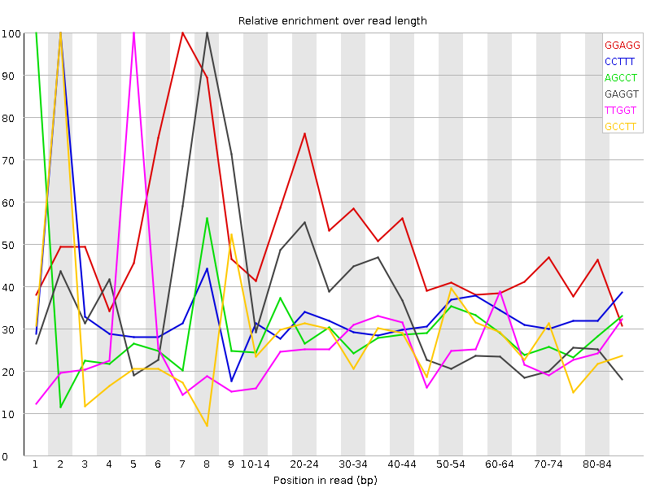

![[OK]](Icons/tick.png) Basic Statistics
Basic Statistics
| Measure | Value |
|---|---|
| Filename | Trimmed_Sample-A_Rep1.R2.fastq.gz |
| File type | Conventional base calls |
| Encoding | Sanger / Illumina 1.9 |
| Total Sequences | 109919 |
| Filtered Sequences | 0 |
| Sequence length | 90 |
| %GC | 50 |
Per base sequence quality

Per sequence quality scores

Per base sequence content

![[WARN]](Icons/warning.png) Per base GC content
Per base GC content

Per sequence GC content

Per base N content

Sequence Length Distribution

![[FAIL]](Icons/error.png) Sequence Duplication Levels
Sequence Duplication Levels

Overrepresented sequences
| Sequence | Count | Percentage | Possible Source |
|---|---|---|---|
| AGCCTTGGTAGGGATAGATAGCCACCTATATAGTATAGCTTCCCATCTTC | 522 | 0.4748951500650479 | No Hit |
| TTAAAGAGGCATCTATCACATAAGGCATCATTATAACTAAAAATGGGATA | 308 | 0.2802063337548559 | No Hit |
| TGGACGGGAGGTATCCCAATAGGAGGTTTCCTCCTATGGTTTTCAAAACA | 283 | 0.25746231315787077 | No Hit |
| CGCCCAAGCTGCTCACAGTATACGGGCGTCGGCATCCAGACCGTCGGCTG | 221 | 0.20105714207734787 | No Hit |
| AACATGCACAGCGGTCAAACAGTATGTCCCAAGGGGACTTAAGCGCGGTG | 209 | 0.19014001219079504 | No Hit |
| CATAAAACTGTAACTAAGTGAGGCTCTCTCATTGGTTTATACTTCAATAT | 209 | 0.19014001219079504 | No Hit |
| ATGGACGGGAGGTATCCCAATAGGAGGTTTCCTCCTATGGTTTTCAAAAC | 207 | 0.18832049054303623 | No Hit |
| CCCTTTCAGCCTTTTGGGTCCTGTATCCCAATTCTCAGAGGTCCCGCCGT | 201 | 0.18286192559975983 | No Hit |
| GTAACCAAACATGCACAGCGGTCAAACAGTATGTCCCAAGGGGACTTAAG | 200 | 0.18195216477588042 | No Hit |
| GGCTGAAAGCCCTAACTTAATGGACGGGAGGTATCCCAATAGGAGGTTTC | 184 | 0.16739599159381 | No Hit |
| TTTATACTTCAATATAAGCCTTGGTAGGGATAGATAGCCACCTATATAGT | 181 | 0.16466670912217177 | No Hit |
| GGACGGGAGGTATCCCAATAGGAGGTTTCCTCCTATGGTTTTCAAAACAA | 174 | 0.15829838335501598 | No Hit |
| CCTGAAACGGGCATCGTCGCTCTTCGTTGTTCGTCGACTTCTAGTGTGGA | 164 | 0.14920077511622196 | No Hit |
| ATAGGTCTCAGAAAAACGAAATATAGGCTTACGGTAGGTCCGAATGGCAC | 157 | 0.1428324493490661 | No Hit |
| GGTTTATACTTCAATATAAGCCTTGGTAGGGATAGATAGCCACCTATATA | 156 | 0.14192268852518672 | No Hit |
| CATCCAGACCGTCGGCTGATCGTGGTTTTACTAGGCTAGACTAGCGTACG | 152 | 0.1382836452296691 | No Hit |
| GTATACGGGCGTCGGCATCCAGACCGTCGGCTGATCGTGGTTTTACTAGG | 151 | 0.1373738844057897 | No Hit |
| ACCTTTGGGTTCCAGAGCTGTACGGTCGCACTGAACTCGGATAGGTCTCA | 149 | 0.13555436275803093 | No Hit |
| GTGAGGCTCTCTCATTGGTTTATACTTCAATATAAGCCTTGGTAGGGATA | 144 | 0.13100555863863392 | No Hit |
| TAAAACTGTAACTAAGTGAGGCTCTCTCATTGGTTTATACTTCAATATAA | 143 | 0.1300957978147545 | No Hit |
| GCCACCTATATAGTATAGCTTCCCATCTTCTTTGAGAGTTGTTGGTTTAT | 138 | 0.1255469936953575 | No Hit |
| GCATCGTCGCTCTTCGTTGTTCGTCGACTTCTAGTGTGGAGACGAATTGC | 136 | 0.12372747204759868 | No Hit |
| CTAACTTAATGGACGGGAGGTATCCCAATAGGAGGTTTCCTCCTATGGTT | 134 | 0.12190795039983988 | No Hit |
| CCTAACTTAATGGACGGGAGGTATCCCAATAGGAGGTTTCCTCCTATGGT | 130 | 0.11826890710432228 | No Hit |
| ATTATCAATCAAGCTCCCCGAGGAGCGGACTTGTAAGGACCGCCGCTTTC | 119 | 0.10826153804164886 | No Hit |
| CCCAAGCTGCTCACAGTATACGGGCGTCGGCATCCAGACCGTCGGCTGAT | 118 | 0.10735177721776945 | No Hit |
| CGCAGCCCGGGTCGATTATAACAACGGTGCAATCTCAGCTAAACCGACGC | 117 | 0.10644201639389003 | No Hit |
| GAAACTGCCTCGTCATGCGACTGTTCCCCGGGGTCAGGGCCGCTGGTATT | 114 | 0.10371273392225185 | No Hit |
| AGCATCAACCTGCGCCGTCTTGTTAACTTGTCATATCGCGCACGTAGTAG | 113 | 0.10280297309837244 | No Hit |
| TCGCGTATAGGGACGCCCCCTGCTCGCGTTACTGCCAAGCGAGCGTGGTG | 113 | 0.10280297309837244 | No Hit |
| CTAGGCTAGACTAGCGTACGAGCACTATGGTCAGTAATTCCTGGAGGAAT | 113 | 0.10280297309837244 | No Hit |
| AAAGCCCTAACTTAATGGACGGGAGGTATCCCAATAGGAGGTTTCCTCCT | 110 | 0.10007369062673423 | No Hit |
Kmer Content

| Sequence | Count | Obs/Exp Overall | Obs/Exp Max | Max Obs/Exp Position |
|---|---|---|---|---|
| GGAGG | 22120 | 2.476157 | 5.0541754 | 7 |
| CCTTT | 17425 | 1.8472142 | 5.6526737 | 2 |
| AGCCT | 16120 | 1.7294438 | 5.9052615 | 1 |
| GAGGT | 15020 | 1.6677572 | 5.0132594 | 8 |
| TTGGT | 15175 | 1.6649249 | 6.4633026 | 5 |
| GCCTT | 14825 | 1.5844165 | 5.790725 | 2 |
| CCTTG | 14580 | 1.5582321 | 5.8823733 | 3 |
| CTTGG | 14070 | 1.5297816 | 5.7505374 | 4 |
| GGTAG | 10925 | 1.2130656 | 6.111402 | 7 |
| TGGTA | 10670 | 1.1751604 | 5.6830564 | 6 |
| TAGGG | 10490 | 1.1647651 | 5.633949 | 9 |
| GTAGG | 9175 | 1.018753 | 5.633949 | 8 |